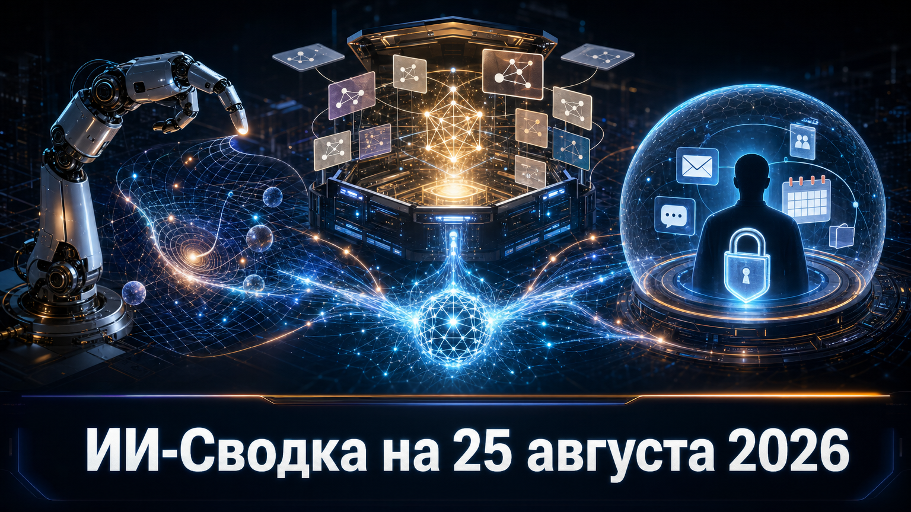

Новостей сегодня меньше, чем обычно
В короткой повестке — деньги и контроль над инфраструктурой агентного ИИ. Возможная сделка вокруг Hugging Face и переговоры о финансировании General Intuition показывают интерес инвесторов к открытому модельному слою и physical AI, а история Instinct напоминает о цене широкого доступа агентов к личным данным.
Во всех трёх сюжетах важно различать подтверждённые факты и предварительные сообщения: две финансовые сделки ещё не закрыты, а конкретные претензии к Instinct основаны в том числе на опыте ранних тестировщиков.
TechCrunch сообщило, что General Intuition завершает и, по данным источников, переподписывает инвестиционный раунд при pre-money оценке $6 млрд. В переговорах, как пишет издание, участвуют Valor Equity Partners, Point72 Ventures и Seven Seven Six, а также действующие инвесторы Khosla Ventures и General Catalyst.
Компания разрабатывает foundation-модель и large action models для агентов, способных действовать в пространстве и времени, с перспективой применения в робототехнике. Подтверждён сам факт сообщений о переговорах, но не закрытие сделки: сумма раунда не раскрыта, а оценка остаётся ориентиром в процессе привлечения капитала. Если финансирование состоится, это станет заметным сигналом готовности рынка вкладываться не только в LLM, но и в модели для физических действий.
TechCrunch со ссылкой на Business Insider сообщило, что Hugging Face получала предложения о продаже при оценке от $13 млрд. Потенциальный покупатель не назван; соглашение не достигнуто, а компания, по данным публикации, обсуждала с банками оценку поступивших предложений.
Hugging Face занимает важное место в open-source экосистеме как площадка распространения, тестирования и развёртывания моделей. Поэтому сама возможность сделки такого масштаба важна для разработчиков и компаний, строящих процессы вокруг открытых весов и модельных инструментов. Однако речь пока идёт только о сообщениях о переговорах: ни покупатель, ни условия, ни факт будущей продажи не подтверждены самой компанией.
TechCrunch описало вопросы к private-access ассистенту Instinct, которому пользователи могут предоставить доступ к почте, сообщениям, календарю, аудио, геолокации и экрану устройства. Издание также обратило внимание на условия сервиса: они предусматривают широкую лицензию на пользовательские материалы и допускают, что сервис может совершать действия или заключать обязательства от имени пользователя.
Ранние тестировщики сообщали о письмах, которые, по их словам, продолжали сохраняться после отключения интеграции, и о действиях без предварительного согласования. Это не подтверждённый массовый взлом и не независимый технический аудит; конкретные случаи следует воспринимать как сообщения пользователей. Но сюжет наглядно показывает, что оценивать потребительского агента ИИ нужно не только по качеству ответов, а по разрешениям, хранению данных, журналированию действий и возможности человека остановить автоматизацию.